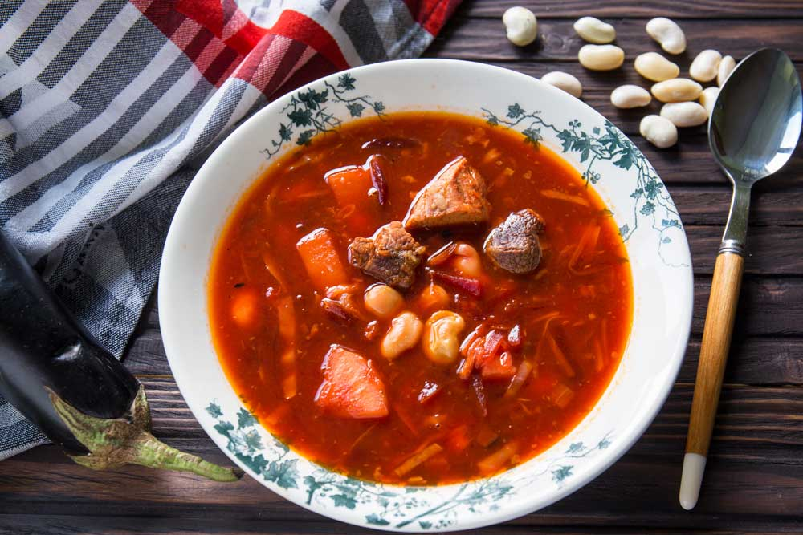
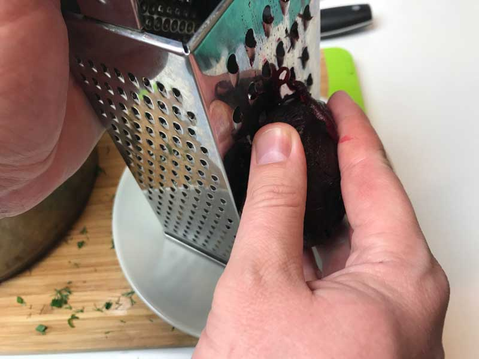
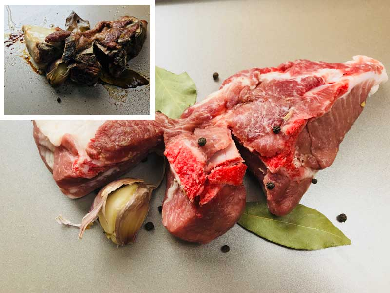
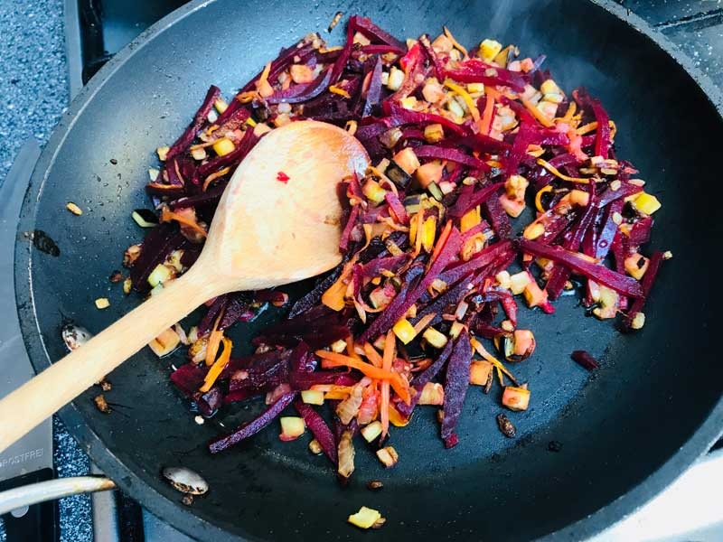
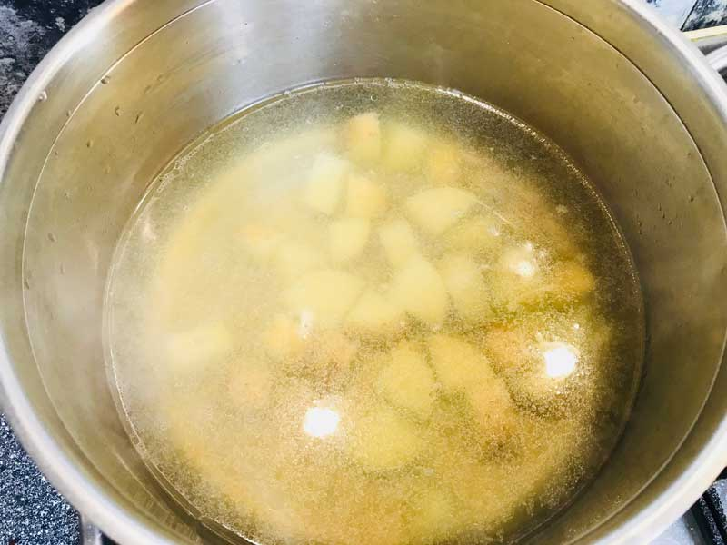
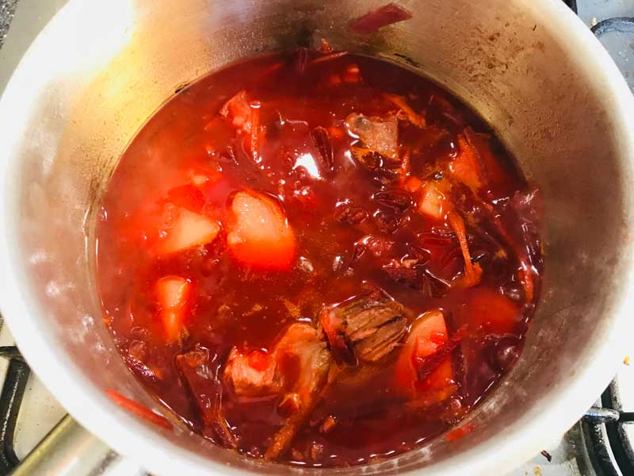

ЗРОБЛЕНО В УКРАЇНІ: РЕЦЕПТ ГЕТЬМАНСЬКОГО БОРЩУ
СЕКРЕТИ ПРИГОТУВАННЯ ГЕТЬМАНСЬКОГО БОРЩУ
Гетьманський борщ традиційно готують зі свинячими ребрами, а також додають більшість знайомих нам з малечку інгредієнтів, як то буряк, морква, цибуля, квасоля та картопля. Але один складник у цьому рецепті досить неочікуваний та оригінальний – це баклажан. Радимо приготувати такий варіант борщу. Смак гетьманського борщу виходить дуже характерним і впізнаваним, адже баклажани дають приємний аромат і солодкість страві.
ІНГРЕДІЄНТИ
- 300 г свинини (ребра)
- 1 буряк (середнього розміру)
- 1 цибуля (середнього розміру)
- 1 морква (велика)
- 2 шт. картоплі
- середнього розміру
- 100 г квасолі
- 150 г баклажана
- 150 г капусти
- 2 ст. л. томатної пасти
- 1 ст. л. цукру
- 2 лаврові листки
- 2 зубчики часнику
- 2 л води
- 2 ст. л. соняшникової олії чорний перець (горошком) до смаку сіль і перець до смаку
ЗРОБЛЕНО В УКРАЇНІ: РЕЦЕПТ ГЕТЬМАНСЬКОГО БОРЩУ: ПОКРОКОВИЙ РЕЦЕПТ
- Приготуйте всі інгредієнти для борщу. Буряк помийте і запікайте в духовці півтори години, потім охолодіть, очистьте і поріжте тонкою соломкою або натріть на крупній тертці. Ви також можете використовувати готовий відварний буряк, який продається в будь-якому супермаркеті – це дуже зручно. Квасолю (100 г) замочіть в холодній воді на 1 годину, потім злийте воду.
- Якщо ви використовуєте молоду квасолю, замочувати її не потрібно.
 - Візьміть 300 г свинячих ребер, зачистьте від сухожилля та плівок, помийте та трохи посоліть. Запечіть м’ясо в духовці з лавровим листом, часником, і перцем горошком протягом 20 хвилин при 180 градусах. Смак бульйону з запеченого м'яса виходить більш насиченим і борщ буде набагато смачнішим. Дайте м'ясу охолонути та поріжте його на шматки.
 - Моркву потріть на тертці, цибулю дрібно поріжте, 150 г баклажана поріжте дрібними кубиками. Розігрійте сковороду з соняшниковою олією, спочатку обсмажте цибулю і моркву протягом 2-3 хвилин, потім додайте баклажан і буряк і тушкуйте ще 2 хвилини. Потім додайте 2 ст. л. томатної пасти, 1 ст. л. цукру та тушкуйте ще 2 хвилини.
 - Картоплю почистьте і поріжте кубиками невеликого розміру. У велику каструлю налийте воду, викладіть картоплю і запечене м'ясо і доведіть до кипіння. Зменште вогонь і варіть ще 5 хвилин.
 - Додайте 150 г тонко нашинкованої капусти, квасолю, і варіть протягом 15 хвилин. Потім додайте овочеву піджарку і варіть ще 5-7 хвилин. Посоліть і поперчіть до смаку. В кінці приготування додайте 2 зубчики роздавленого часнику.

Готувати – це просто!
Рецепт разроблений спеціально для сайту www.yizhakultura.com